Abajo, en Artifacts, descarga el instalador (un .zip). Descomprimelo.
Ejecuta MusicCreativeLab-Setup-(version).exe y dale a Siguiente hasta el final. Si Windows dice "Windows protegio su PC", pulsa Mas informacion > Ejecutar de todas formas (sale porque el programa no esta firmado, es normal).
Abre Music Creative Lab desde el menu Inicio.
Elegir tu tarjeta de sonido (Monocaster G1 Neo)
Conecta la Monocaster por USB antes de abrir la app.
Pulsa el boton Audio (arriba a la derecha, numero 16 en la seccion 3).
En Tipo elige ASIO si aparece tu interfaz; si no, Windows Audio. En Dispositivo elige la Monocaster tanto para salida como para entrada.
Tamano de buffer: empieza en 256. Si oyes chasquidos, sube a 512. Si notas retraso al tocar, baja a 128.
JARVIS dice: Mientras no elijas tarjeta veras arriba el texto 'SIN AUDIO: pulsa Audio'. En las capturas sale porque las hice en un ordenador sin altavoces, tranquilo.
Ojo: No mezcles: si usas ASIO, cierra otros programas que usen la misma interfaz (OBS, Discord...) o pueden pelearse por ella.
La primera vez
La app abre la pestana TUTORIALES: son 10 mini guias dentro del programa. Cada una tiene el boton Cargar la demo de este tutorial para probarlo al momento.
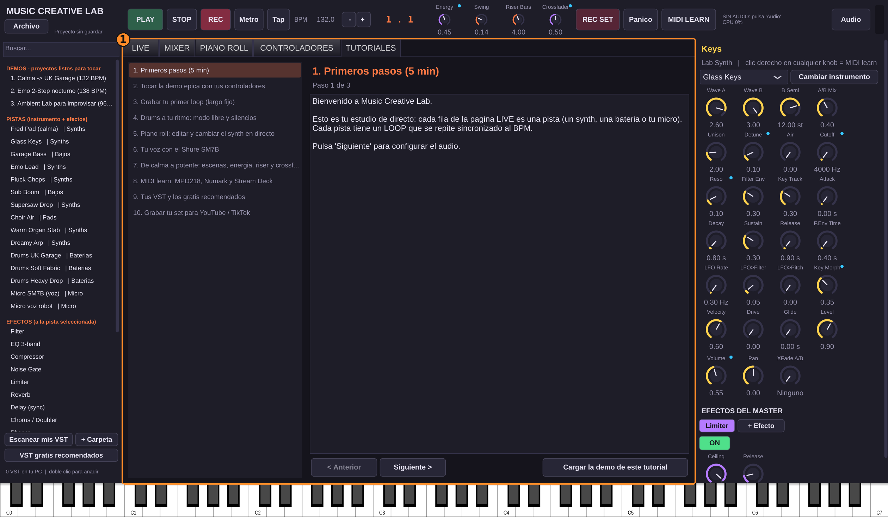
Pestana Tutoriales: lista de guias a la izquierda, texto en el centro y boton para cargar la demo.
2. La pantalla principal
Todo esta en una sola pantalla. No hay ventanas escondidas: lo que ves es lo que suena.
Pagina LIVE con la demo 1 sonando.
Navegador. Demos, pistas listas (instrumento + efectos), efectos y tus VST. Doble clic para anadir.
Pestanas. LIVE (tocar), MIXER (volumenes), PIANO ROLL (editar notas), CONTROLADORES (mapeos) y TUTORIALES.
Escenas. Botones que cambian varias pistas a la vez (intro, build, drop...).
Inspector. Los mandos de la pista seleccionada: su instrumento y sus efectos.
Teclado. Puedes tocar con el raton o con el teclado del ordenador (A W S E D F...).
PLAY. Arranca y para la musica (tecla Espacio).
Energy. El 'mando magico': de 0 (oscuro, filtrado) a 1 (todo abierto, potente).
MIDI LEARN. Para asignar cualquier mando a tus controladores.
Audio. Configurar tarjeta de sonido.
Cada fila de LIVE es una pista: un instrumento (synth, bateria) o tu micro. Haz clic en una fila para seleccionarla; el Inspector de la derecha cambia para mostrar sus mandos.
3. La barra de arriba
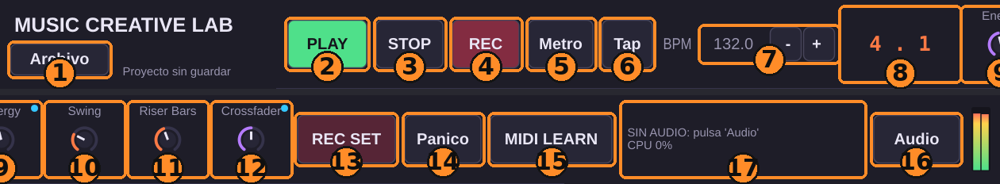
Barra superior (partida en dos para que se lea bien).
Archivo. Nuevo proyecto, abrir, guardar, demos y la carpeta de sets grabados.
PLAY. Empieza a sonar.
STOP. Para. Pulsado dos veces vuelve al principio.
REC. Graba o hace overdub en la pista seleccionada (tecla R).
Metro. Metronomo (clic en cada pulso).
Tap. Pulsalo al ritmo de una cancion y la app adivina el BPM.
BPM. Velocidad. UK garage suele ir a 130-140. Usa - y + para ajustar.
Energy. Filtro general: bajalo para un break oscuro, subelo para el drop.
Swing. Hace que el ritmo 'cojee' con estilo; clave en garage (0.1-0.25).
Riser Bars. Cuantos compases dura la subida del Riser.
Crossfader. Mezcla entre las pistas del lado A y del lado B, como un DJ.
REC SET. Graba TODO lo que suena a un archivo WAV (para YouTube/TikTok).
Panico. Si una nota se queda pillada, esto calla todo.
MIDI LEARN. Modo de asignar controles.
Audio. Tarjeta de sonido.
Estado. Avisos y uso de CPU.
JARVIS dice: Los mandos con un puntito azul ya estan asignados a un knob de tu MPD218.
4. Una pista por dentro (el looper)
Cada pista tiene su propio looper: grabas un trozo y se repite solo, siempre a tempo.
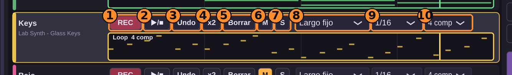
Fila de la pista Keys.
REC. 1a vez: graba. Si ya hay loop: overdub (anade notas encima sin borrar).
Play/Stop. Para o reanuda solo este loop.
Undo. Deshace el ultimo overdub.
x2. Duplica el loop (4 compases pasan a 8) para hacer variaciones.
Borrar. Vacia la pista.
M (Mute). Silencia la pista.
S (Solo). Solo suena esta pista.
Modo.Largo fijo: tu eliges cuantos compases. Libre (silencios): empieza con tu primer golpe y se cierra solo cuando dejas 2 compases de silencio.
Cuantizacion. Coloca tus notas en la rejilla al grabar. 1/16 es lo normal; 'Sin cuant.' deja tus notas tal cual.
Compases. Largo del loop en modo fijo: 1, 2, 4, 8 o 16.
El recuadro de abajo muestra las notas del loop y una linea que avanza (el cabezal). El color del borde te dice el estado: rojo grabando, naranja overdub, color de la pista = sonando.
5. Tu primer loop de bateria (paso a paso)
Lo que pediste: grabar bateria a cualquier tempo y que el programa entienda los silencios. Asi se hace:
Paso 1. Proyecto nuevo
Archivo > Nuevo proyecto. Te crea 5 pistas vacias: Bateria, Pad, Bajo, Keys y Micro.
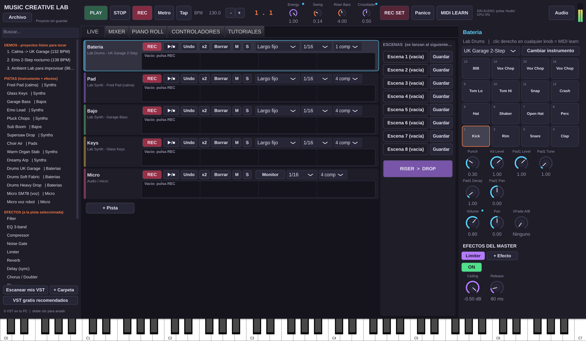
Proyecto nuevo: todo vacio y listo para grabar.
Paso 2. Modo libre y REC
En la pista Bateria pon el modo en Libre (silencios) y pulsa REC. La pista se queda esperando: no empieza a grabar hasta que des el primer golpe, asi no hay huecos raros al principio.
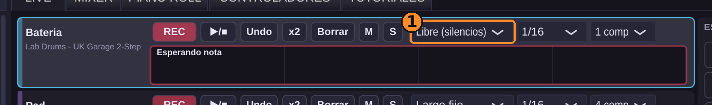
Esperando tu primer golpe.
Paso 3. Toca
Toca los pads de la MPD218 (o las teclas del ordenador). Bombo, hi-hat, clap, hi-hat... El recuadro rojo crece mientras tocas: 1, 2, 4... compases.
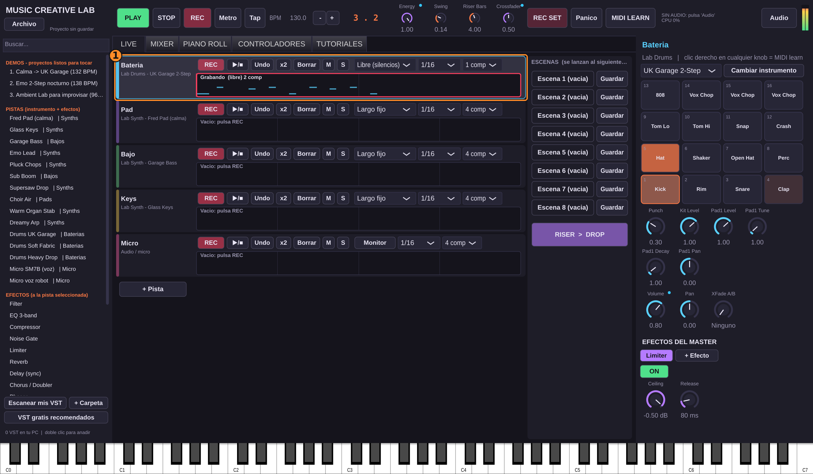
Grabando en modo libre: ves las notas aparecer y los pads se iluminan a la derecha.
Paso 4. Deja de tocar
Cuando dejas 2 compases en silencio, la app entiende que has terminado: cierra el loop, lo redondea al largo mas logico (1, 2, 4, 8 o 16 compases) y lo pone a sonar. Las notas quedan como las tocaste (con la cuantizacion que elegiste).
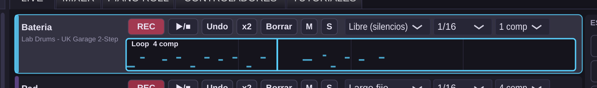
Loop cerrado: 2 compases, ya sonando en bucle.
Si quieres retocarlo, ve al PIANO ROLL: ahi ves cada golpe y lo puedes mover.
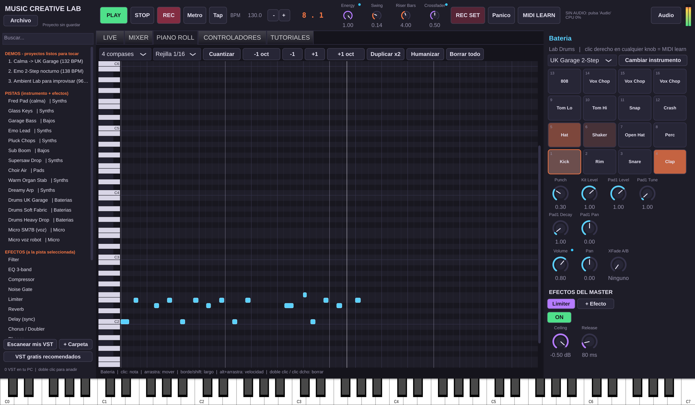
Tu loop de bateria en el piano roll.
JARVIS dice: Si te equivocas: Undo (o Z). Si quieres empezar de cero: Borrar. Si quieres anadir mas golpes encima: REC otra vez = overdub.
6. Escenas, Energy y el Riser > Drop
Una escena es una "foto" de que pistas suenan. Pulsar una escena cambia todo a la vez, siempre al empezar el siguiente compas para que no se descuadre.
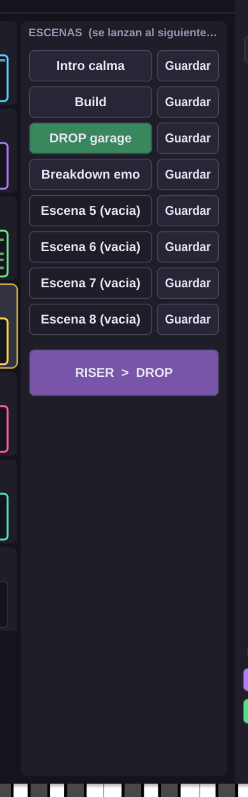
Columna de escenas de la demo 1: Intro calma, Build, DROP garage y Breakdown emo.
Lanzar: clic en el nombre (o teclas 1 a 8).
Guardar: deja sonando lo que quieras (con mutes) y pulsa Guardar en una escena vacia.
El Riser > Drop
Pulsa RISER > DROP (tecla B): durante unos compases (Riser Bars) la musica sube de tension, el Energy se abre... y al terminar salta a la siguiente escena con el drop. Es tu transicion de calma a UK garage potente con un solo boton.
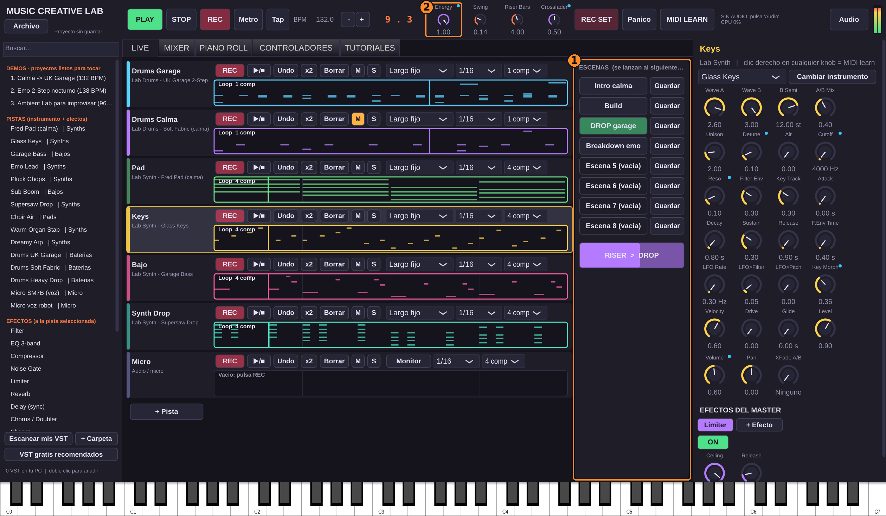
Riser en marcha: el boton se llena de izquierda a derecha y el Energy sube a 1.
JARVIS dice: Pon el knob 1 de la MPD218 en Energy (ya viene asi) y mueve tu mismo la tension; el Riser es la version automatica.
7. El synth (Lab Synth) y Key Morph
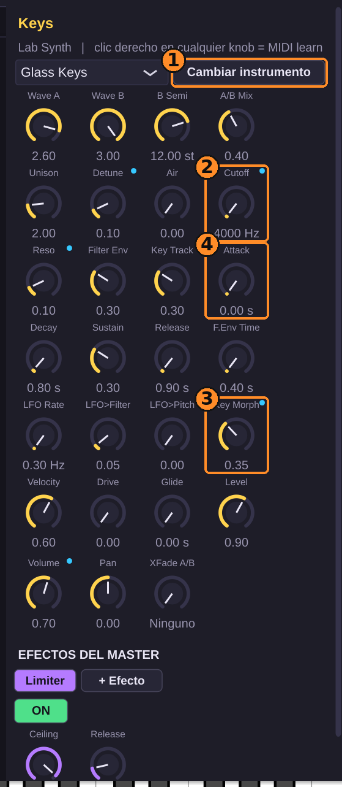
Inspector de la pista Keys.
Cambiar instrumento. Pon otro synth, la bateria o un VST tuyo.
Cutoff. Brillo. Bajo = oscuro y suave; alto = brillante.
Key Morph. La magia que pediste: cada tecla suena distinta. Las notas graves suenan mas calidas y las agudas mas brillantes y abiertas, asi cada acorde transmite mas emocion.
Attack. Cuanto tarda en entrar el sonido. 0 = golpe; alto = entra suave como un pad.
El desplegable de arriba tiene 10 presets: Fred Pad, Glass Keys, Garage Bass, Emo Lead, Pluck Chops, Sub Boom, Supersaw Drop, Choir Air, Warm Organ Stab y Dreamy Arp.
Otros mandos utiles:
Wave A/B, A/B Mix: forma de onda (el "color" basico).
Unison/Detune: mas voces desafinadas = sonido gordo.
Reso: pitido en el filtro (cuidado, sube poco).
Decay/Sustain/Release: como se apaga la nota.
LFO: movimiento automatico.
Glide: las notas se deslizan.
JARVIS dice: Todos estos mandos se pueden mover en directo mientras el loop suena. Prueba Key Morph y Cutoff a la vez con dos knobs de la MPD218: asi pasas de calma a brillante sin parar la musica.
8. La bateria (16 pads)
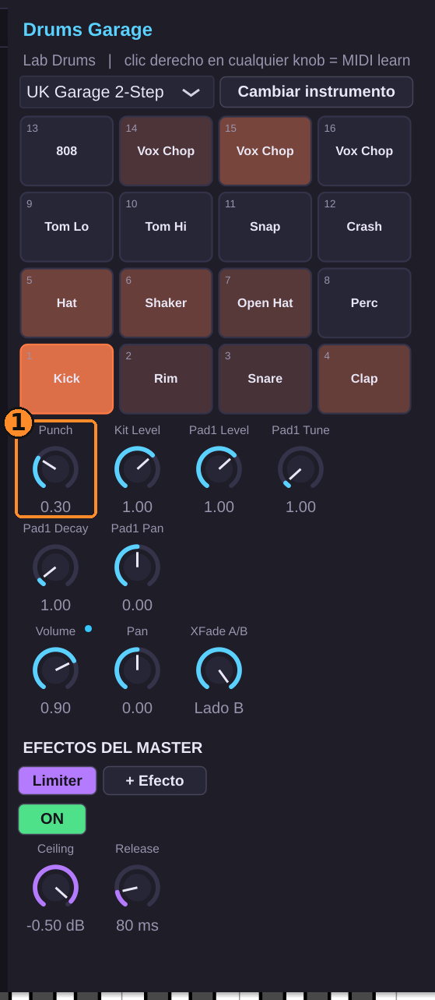
Inspector de una pista de bateria.
Los 16 pads estan colocados igual que en tu MPD218 (banco A): abajo a la izquierda el 1 (Kick).
Clic en un pad: suena y lo selecciona.
Clic derecho en un pad: cargar tu propio sample (WAV, AIFF o FLAC) o elegir otro sonido.
El desplegable de arriba cambia el kit: UK Garage 2-Step, Soft Fabric (calma) o Heavy Drop (potente).
Punch. Da pegada a todo el kit.
Debajo: Kit Level y los mandos del pad seleccionado (volumen, afinacion, duracion y panorama).
9. Efectos
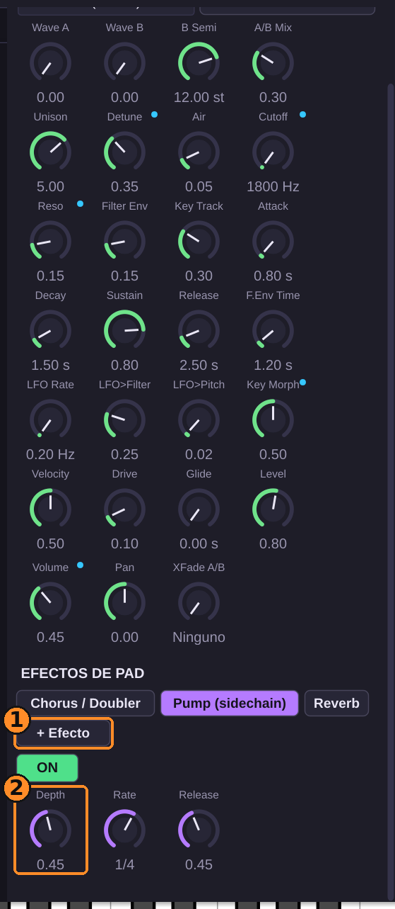
Efectos de la pista Pad, con Pump (sidechain) seleccionado.
Cada pista tiene su cadena de efectos (abajo del Inspector). El sonido pasa por ellos de izquierda a derecha.
+ Efecto. Anade uno de la lista (o un VST de efecto).
Mandos del efecto. Aqui Depth: cuanto 'bombea' el pad con el bombo, el sonido tipico de garage.
Clic en un efecto = ver sus mandos. Boton verde ON = encender/apagar.
Para quitar, apagar o reordenar un efecto: en el MIXER, clic derecho sobre el efecto (Activar/desactivar, Subir, Bajar, Eliminar).
Desde el Navegador: doble clic en un efecto lo anade a la pista seleccionada.
"Efectos infinitos": encadena los que quieras y suma los VST gratis de la seccion 12.
10. El Mixer
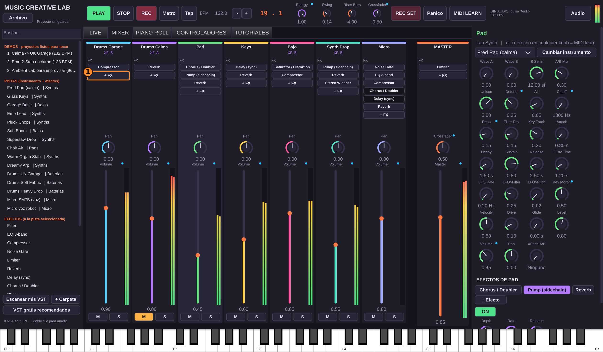
Pestana MIXER: un canal por pista, como en FL Studio.
Fader: volumen de la pista. Medidor: lo fuerte que suena (si llega arriba y se pone rojo, baja).
Pan: izquierda/derecha. M/S: mute y solo.
FX: la cadena de efectos; + FX anade uno.
XF: A / B: en que lado del crossfader esta cada pista.
MASTER: todo junto. Lleva un Limiter al final para que nunca sature.
JARVIS dice: Truco DJ: pon la bateria calma en A y la de garage en B, y pasa de una a otra con el crossfader (knob 7 de la MPD218).
11. El Piano Roll
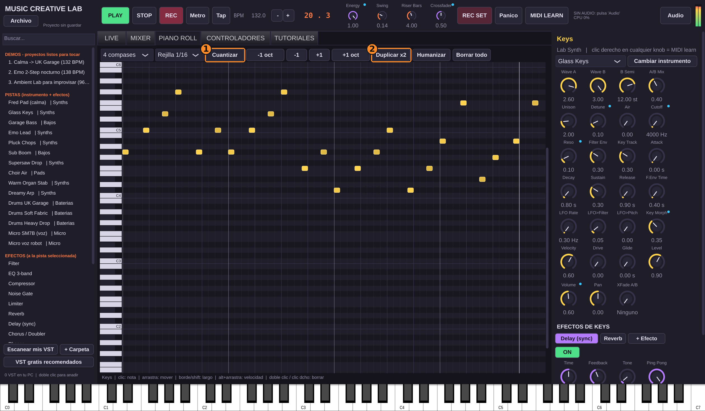
Piano roll de la pista Keys.
Clic en un hueco: crea nota. Arrastrar: mover. Borde o Shift: cambiar largo. Alt + arrastrar: velocidad (fuerza). Doble clic / clic derecho: borrar.
Compases y Rejilla: largo del loop y tamano de la cuadricula.
Cuantizar (1): pone las notas en su sitio exacto. Duplicar x2 (2): copia el loop detras.
-1 oct / +1 oct / -1 / +1: sube o baja todo. Humanizar: lo vuelve un poco imperfecto (mas "humano").
Lo mejor: el piano roll sigue sonando en bucle mientras editas, y puedes mover los mandos del synth en el Inspector a la vez para cambiar el sonido en tiempo real.
12. Navegador, presets y VST
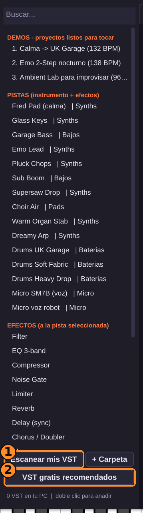
Navegador (columna izquierda).
DEMOS: 3 proyectos para tocar ya: Calma -> UK Garage (132 BPM), Emo 2-Step nocturno (138) y Ambient Lab (96).
PISTAS: 15 presets: instrumento + efectos ya ajustados. Doble clic y aparece una pista nueva.
EFECTOS: doble clic = se anade a la pista seleccionada.
Buscar: escribe para filtrar.
Escanear mis VST. Busca los VST3 instalados en tu PC (C:\Program Files\Common Files\VST3). Con + Carpeta anades otra carpeta.
VST gratis recomendados. Lista de VST gratis y legales (Vital, Surge XT, Dexed, Spitfire LABS, Decent Sampler, TAL, Valhalla Supermassive...). Los descargas tu desde su web y le das a Escanear.
Ojo: No puedo meter en la app VST de pago (Serum, Omnisphere, Kontakt...): la licencia no deja repartirlos. Si los compras y los instalas, la app los carga sin problema.
13. Anadir pistas
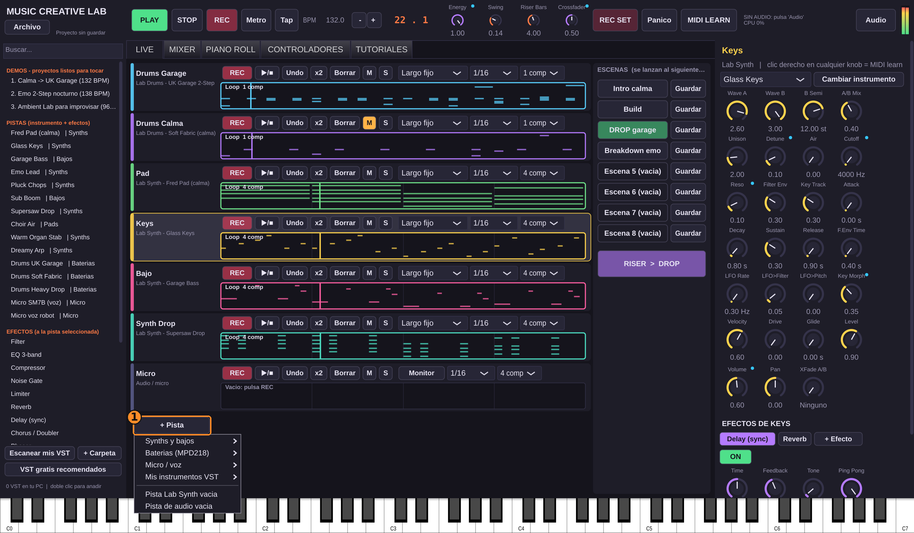
Boton + Pista con su menu.
Pulsa + Pista (1) al final de las filas: eliges Synths y bajos, Baterias (MPD218), Micro / voz, Mis instrumentos VST, o una pista vacia (synth o audio).
Clic derecho en el nombre de una pista: renombrar, abrir piano roll, subir/bajar, lado del crossfader (A/B) o eliminar.
14. MIDI Learn: controla todo con tus aparatos
Cualquier mando, boton o fader de la app se puede asignar a un knob, pad o fader fisico. Dos formas:
Forma rapida: clic derecho en un mando
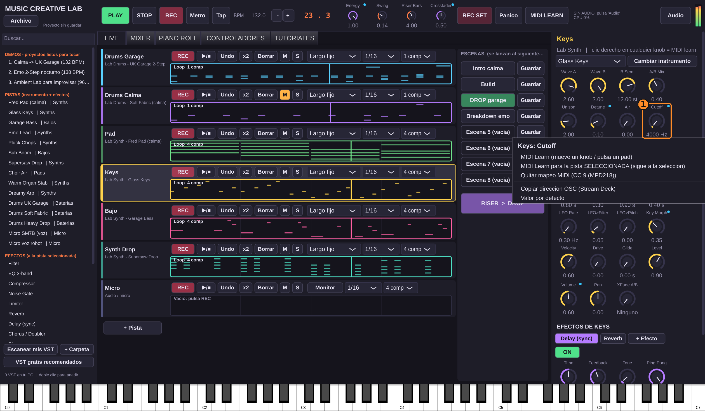
Clic derecho en Cutoff.
MIDI Learn: mueve un knob de tu controlador y queda asignado a ESTE mando de ESTA pista.
MIDI Learn para la pista SELECCIONADA: el knob controla el Cutoff de la pista que tengas seleccionada en cada momento. Con 8 knobs controlas todas las pistas.
Copiar direccion OSC: para el Stream Deck (seccion 15).
Valor por defecto: lo devuelve a su sitio.
Modo Learn
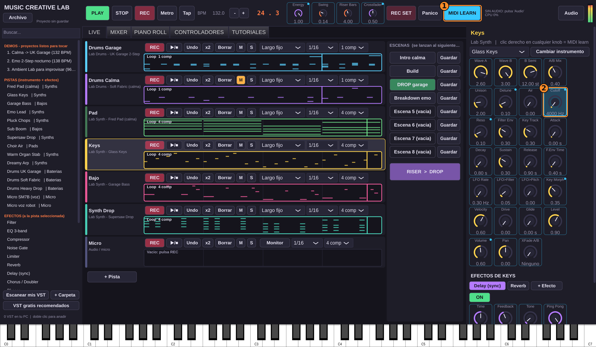
MIDI LEARN encendido (1): los mandos se recuadran y el que esta esperando se marca (2).
Pulsa MIDI LEARN, haz clic en un mando de la app, mueve el control fisico... listo. Repite con todos los que quieras y vuelve a pulsar MIDI LEARN para salir.
15. Controladores: MPD218, Numark y Stream Deck
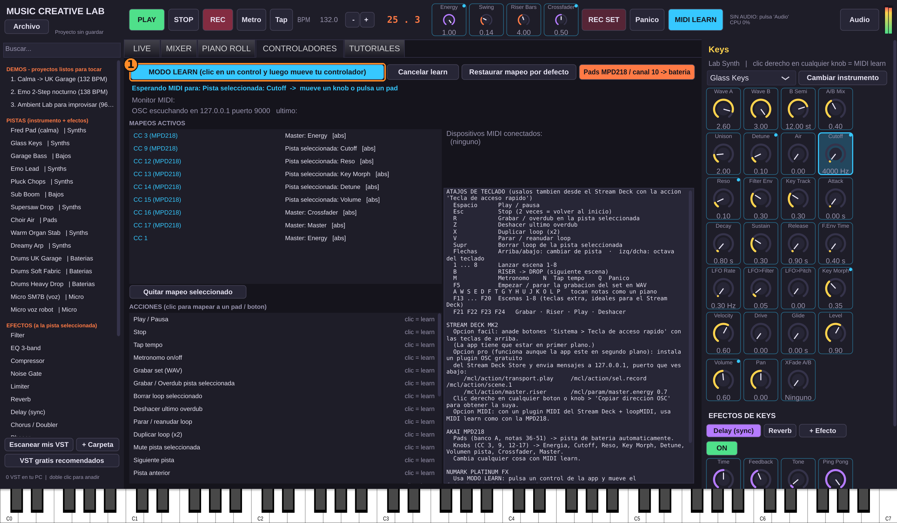
Pestana CONTROLADORES: mapeos activos, acciones y la ayuda de cada aparato.
Aqui ves todos los mapeos (puedes quitar el que quieras), el monitor MIDI (que llega en tiempo real) y la lista de Acciones: clic en una y pulsa un pad = ese pad hace esa accion (Play, Grabar, Escena 3, Riser...).
Akai MPD218 (ya viene configurado)
Pads (banco A): van directos a la pista de bateria (notas 36-51). Con el boton naranja Pads MPD218 -> bateria lo activas/desactivas.
Knobs 1-8: Energy, Cutoff, Reso, Key Morph, Detune, Volumen de la pista seleccionada, Crossfader y Master.
Bancos B y C de pads: libres para que les pongas acciones (ej. banco B = escenas 1-8).
Numark Platinum FX
Pulsa MODO LEARN, haz clic en el mando de la app y mueve el control de la Numark. Ideas: crossfader de la Numark = Crossfader; faders de canal = volumen de pistas; botones de efectos = Riser y mutes; jog = Energy.
Stream Deck MK2
Lo facil: en el software del Stream Deck anade botones Sistema > Tecla de acceso rapido con las teclas de abajo (la app tiene que estar delante).
Pro (funciona aunque la app este en segundo plano): plugin OSC gratuito de la Store, enviando a 127.0.0.1 puerto 9000 mensajes como /mcl/action/transport.play, /mcl/action/scene.1, /mcl/action/master.riser o /mcl/param/master.energy 0.7.
Tecla
Hace
Tecla
Hace
Espacio
Play / pausa
1 ... 8
Lanzar escena
Esc
Stop (2 veces = inicio)
B
Riser > Drop
R
Grabar / overdub
M
Metronomo
Z
Deshacer overdub
N
Tap tempo
X
Duplicar loop
Q
Panico
V
Parar/reanudar loop
F5
REC SET
Supr
Borrar loop
F13-F20
Escenas 1-8 (ideal Stream Deck)
Flechas
Cambiar pista / octava
F21 F22 F23 F24
Grabar, Riser, Play, Deshacer
A W S E D F...
Tocar notas como un piano
JARVIS dice: Las teclas F13-F24 no existen en tu teclado, por eso son perfectas para el Stream Deck: nunca chocan con nada.
16. Tu voz: el SM7B con efectos
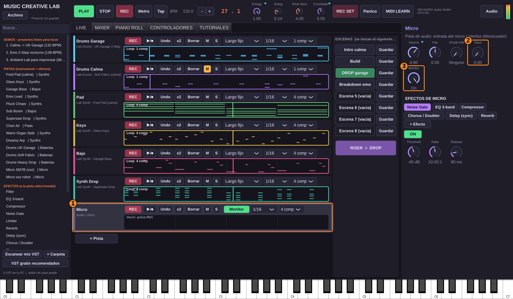
Pista Micro seleccionada con el Monitor encendido y su cadena de efectos.
Fila Micro. Es una pista de audio: su loop graba sonido real (voz, guitarra...). El boton Monitor verde = te oyes con efectos.
Input. Que entrada de la Monocaster usa (0 = entrada 1).
Monitor. Encender para oirte. Apagalo si te acoplas o no lo necesitas.
Cadena que viene puesta: Noise Gate (quita ruido de fondo) > EQ 3-band > Compressor (nivela) > Chorus/Doubler > Delay > Reverb. Tambien tienes el preset Micro voz robot con el efecto Robot.
Ojo: El SM7B necesita mucha ganancia. Sube la ganancia en la Monocaster hasta que, hablando normal, el medidor llegue a la mitad o 3/4. Si se queda corto, un booster tipo Cloudlifter ayuda. Usa auriculares para no acoplar.
Puedes grabar loops de voz igual que con los instrumentos: REC en la pista Micro (modo fijo de compases).
17. Grabar tu set (REC SET)
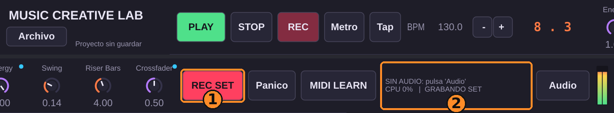
REC SET encendido (1) y el aviso GRABANDO SET (2).
Pulsa REC SET (o F5). Se pone rojo y arriba sale GRABANDO SET.
Toca tu set: escenas, riser, voz, todo.
Vuelve a pulsar REC SET para terminar.
Archivo > Abrir carpeta de sets grabados: tu WAV esta en Musica\Music Creative Lab\Sets, listo para meterlo en tu editor de video.
JARVIS dice: Graba con OBS a la vez para tener la imagen y usa este WAV como audio: suena mucho mejor que capturar el escritorio.
18. Guardar, atajos y trucos
Archivo > Guardar (Ctrl+S). Los proyectos (.mcl) van a Musica\Music Creative Lab\Proyectos. Doble clic en un .mcl lo abre.
Autoguardado: si se cierra la app, al abrirla vuelve todo como estaba.
Ctrl+O abre un proyecto. El Undo (Z) es por pista: deshace el ultimo overdub.
Rendimiento: en tu PC (i7 + 32 GB) va sobrado. Si un VST pesado da chasquidos, sube el buffer a 512.
Flujo recomendado para un directo: 1) graba pad calmado, 2) bajo, 3) bateria calma en libre, 4) guarda escena "Intro", 5) graba bateria garage y synth del drop, guarda escena "Drop", 6) en el directo: Intro > Energy subiendo > Riser > Drop.
19. Mini diccionario musical
BPM
Pulsos por minuto: la velocidad.
Compas
Grupo de 4 pulsos. Los loops miden 1, 2, 4, 8 o 16 compases.
Loop
Trozo que se repite en bucle.
Overdub
Grabar encima de un loop sin borrarlo.
Cuantizar
Colocar las notas exactamente en la rejilla.
Swing
Retrasar un poco las notas pares: da "groove".
Drop
El momento fuerte despues de una subida.
Riser
Subida de tension antes del drop.
Sidechain / Pump
El sonido baja cada vez que pega el bombo: efecto "respira".
Pad
Sonido largo y suave de fondo (y tambien los botones de la MPD).
VST
Instrumento o efecto de otra marca que se mete dentro de la app.
MIDI
El "idioma" con el que tus controladores hablan con el PC.
UK Garage / 2-Step
Estilo de Reino Unido, 130-140 BPM, bateria saltarina con mucho swing.
Esto es la version 0.1. Cada cosa que no te guste o que eches en falta, dimela y la mejoramos. Para eso estamos.